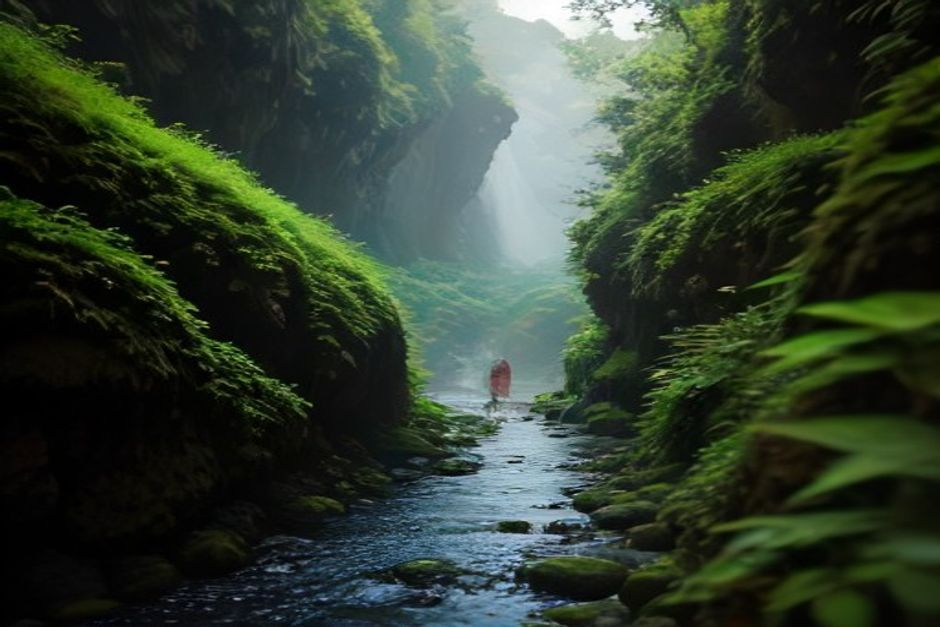
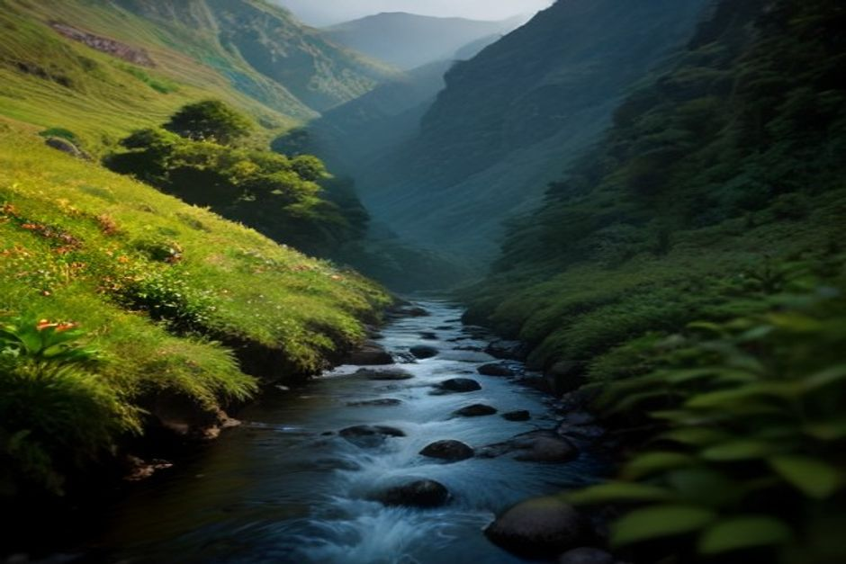

Si ha buscado «levada das 25 Fontes Madeira» o «ruta 25 Fontes», seguramente quiere saber tres cosas: si hay que reservar, cuánto se camina y si compensa dedicarle una mañana. Respuesta corta: sí hay que reservar, son unos 9 km ida y vuelta por un camino casi llano, y es de las pocas rutas famosas de la isla que cumplen lo que prometen.
Antes de ir: reserva obligatoria en SIMplifica
El PR6 forma parte del sistema SIMplifica, con el que Madeira cobra una pequeña tasa en las levadas más visitadas. Son unos 3 € por adulto mayor de 12 años. Los menores de 12 no pagan.
Se paga por adelantado en el portal oficial, simplifica.madeira.gov.pt, que tiene versión en inglés. Lleva un par de minutos. Guarde la confirmación en el móvil: en épocas de mucha afluencia los guardas la piden al inicio del camino.
Cómo llegar a Rabaçal desde Funchal
Rabaçal está en el borde de la meseta de Paul da Serra, en el oeste de la isla y en pleno bosque de laurisilva. Desde Funchal son entre 50 y 60 minutos en coche por la ER110 y la VE4.
No hay autobús público hasta el inicio de la ruta. La mayoría llega en coche de alquiler, en taxi o con un traslado organizado. La carretera sube por bosque de nubes antes de bajar al aparcamiento, y ya es parte de la excursión.

El error típico: el aparcamiento no está en el inicio
El aparcamiento público y gratuito de la ER105 queda unos 2 km por encima del verdadero inicio, la Casa Forestal de Rabaçal. La carretera de bajada es empinada, estrecha y está cerrada al tráfico general.
Tiene dos opciones:
- Bajar a pie: unos 20 minutos. La subida de vuelta lleva entre 30 y 35, y la hará con las piernas cansadas al final del día.
- Tomar el minibús local: circula durante las horas de luz y cobra una tarifa pequeña, en efectivo, por trayecto. Lleve monedas o billetes pequeños.
Quien ya ha hecho la ruta suele coger el minibús la segunda vez, y a veces la primera.
Cómo es la ruta 25 Fontes
Desde la Casa Forestal son unos 4,5 km de ida por un camino de levada casi llano. Ida y vuelta suman unos 9 km, y la mayoría tarda entre 3 y 4 horas contando la parada en la poza.
El sendero sigue el canal de agua por un bosque denso de laurel, con helechos, rocas cubiertas de musgo y alguna cascada que cruza el propio camino. Si busca el «cabo da levada», el punto donde termina el recorrido, es la Lagoa das 25 Fontes: una poza poco profunda, rodeada de árboles y alimentada por pequeños manantiales que brotan de la pared de roca.
Es uno de los rincones más bonitos de la isla, y por eso a media mañana ya hay bastante gente.
¿Se puede uno bañar en la poza?
Técnicamente sí. En la práctica, casi nadie se baña de verdad. El agua llega directa de manantiales de montaña y está fría todo el año, así que lo habitual es mojarse los pies, hacer fotos y comer sobre las rocas.
Si quiere un baño de los que apetecen, la costa sur es otra historia. Las calas resguardadas se calientan durante el verano de una forma que esta poza no logrará nunca.
Ampliar la ruta: la Levada do Risco
La Levada do Risco (PR6.1) comparte el primer tramo con la ruta de 25 Fontes y luego se separa hacia la cascada de mayor caída única de Madeira. Merece la pena la hora extra si las piernas responden.
Hay un detalle importante: parte del camino pasa por un túnel sin iluminación de unos 800 metros. Lleve una linterna frontal o, como mínimo, la luz del móvil. Hacerlo a oscuras con una linterna floja no tiene gracia.
Combinar el Risco con 25 Fontes convierte una ruta de 3 horas en una de 4 o 5. Cuente con ello si depende de un traslado o de un horario de vuelta.
Dificultad y qué llevar
Oficialmente se considera fácil a moderada. El camino está bien cuidado y es casi llano, pero hay tramos estrechos con desnivel hacia el canal y, después de la lluvia, piedra resbaladiza, algo normal a esta altitud.
- Calzado cerrado con buen agarre.
- Una capa ligera impermeable, aunque en Funchal haga buen tiempo: Rabaçal tiene su propio clima.
- Linterna frontal, si va a añadir el Risco.
- Efectivo para el minibús.
- Agua y algo de comer: en la ruta no se vende nada.
Cuándo ir
Llegue lo más temprano que pueda. A media mañana los autobuses de excursiones llenan el aparcamiento y en la poza se hacen colas para las fotos. Los días laborables son bastante más tranquilos que los fines de semana, todo el año.
En primavera y a principios de verano las cascadas llevan más agua y el bosque está más verde. A finales de verano el suelo está más seco, pero los manantiales siguen corriendo.

Montaña por la mañana, mar por la tarde
De todo lo que ofrece el interior de Madeira, 25 Fontes es la ruta que mejor está a la altura de su fama. Y combina bien con la otra cara de la isla: bosque fresco y verde por la mañana, nivel del mar por la tarde.
Esa es la idea de una excursión privada en barco con Chifbay desde la Marina do Funchal, pantalán C. El barco es solo para su grupo, de hasta 5 personas, con dos patrones de Madeira. La salida de día sale a las 10:00 o a las 14:00 y recorre Câmara de Lobos y Cabo Girão, con baño y paddle boards en Fajã dos Padres. Son 2 h 30 hasta Ribeira Brava por 500 €, o 3 h hasta Ponta do Sol por 600 €. El precio es por el barco entero, no por persona.
Si prefiere una salida más corta, el paseo al atardecer sale 1 h 15 antes de la puesta de sol, todo el año, sin parada para bañarse: 2 h hasta Cabo Girão por 400 €, o 2 h 30 hasta Ribeira Brava por 500 €. Todas las salidas incluyen comida y bebida a bordo, un vídeo en 360° con Insta360, imágenes de dron si el tiempo lo permite y fotos con cámara de verdad. La cancelación es gratuita hasta 24 horas antes.
Si la caminata sale por la mañana, deje la tarde para el mar. Puede ver más opciones en nuestra guía de excursiones en barco por Madeira o consultar la información práctica.